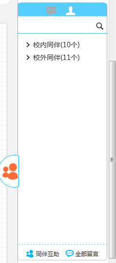
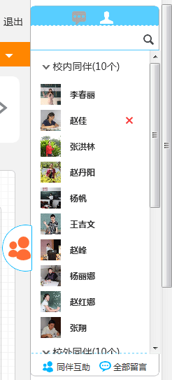

三 使用说明
3.2.10同伴互助
1、校内同伴
打开“同伴互助”，进入同伴互助功能，显示校内同伴（如图3.2.10-1），点击 即可将对方加为好友，点击同伴头像即可在线交流。
图3.2.10-1
2、校外同伴
点击“校外同伴”选项卡，显示校外同伴（如图3.2.10-2），校外同伴包含区域内相同职位的同伴，点击 即可将对方加为好友，点击同伴头像即可在线交流。
即可将对方加为好友，点击同伴头像即可在线交流。
图3.2.10-2
4、 同伴互助悬浮框
鼠标悬停右侧同伴图标位置，即可弹出悬浮框，方便用户快速查找好友（如图3.2.10-3）。
图3.2.10-3
5、解除好友关系
在悬浮窗内找到需要解除好友关系的好友，鼠标悬停好友姓名位置，点击右侧“删除”按钮（如图3.2.10-4）。
图3.2.10-4